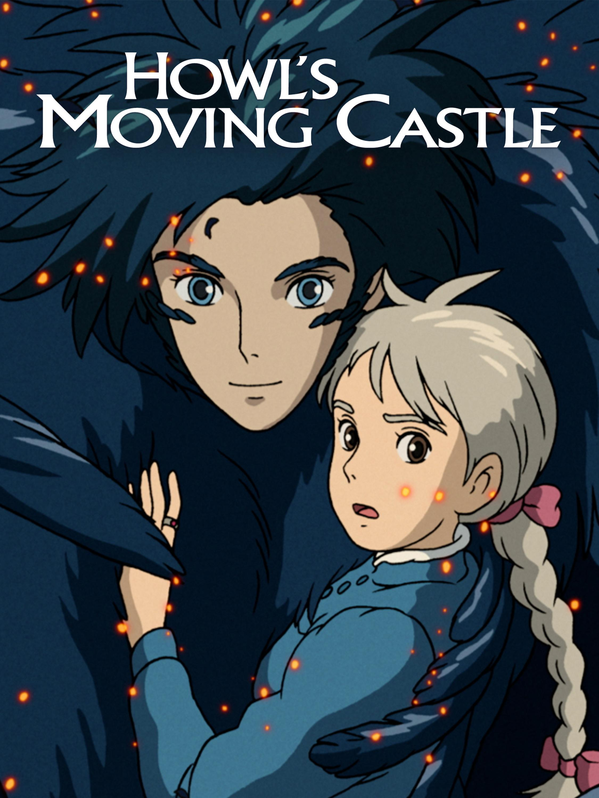
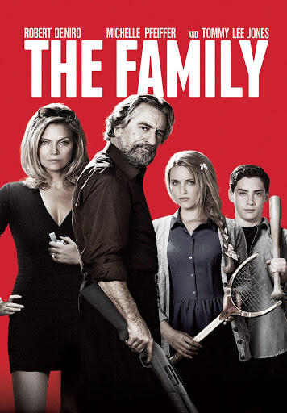

Sci-fi movie that technically only have 2 actors for the majority of the movie. A spaceship crash lands on prehistoric Earth, leaving only two survivors. Soon, they must survive against the hostile terrain and vicious creatures.

This is one of my favorite anime about Teenager Sophie works in her late father's hat shop in a humdrum town, but things get interesting when she's transformed into an elderly woman.
The Manzoni family, a notorious mafia clan, is relocated to Normandy, France under the Witness Protection Program, where fitting in soon becomes challenging, as their old habits die hard.
